Contenido
Cómo resolver las vigas
Empieza con el ejemplo 1 completo. Continúa con el problema PAU 2, siguiendo la guía de DSL, reacciones, cortes y valores de borde. Termina resolviendo el problema PAU 5 y comprueba después tu resultado con el que aparece al final de la colección.
- Calcula las reacciones del ejemplo 1 y resuelve el apartado 2a de la colección.
- Completa los diagramas del ejemplo 1 y resuelve el problema 5 de la colección.
- Resuelve los problemas 2 y 7 de la colección.
- Resuelve el problema 4 de la colección sin mirar antes su resultado, y revisa después los errores con la hoja-resumen.
Resuelve también los problemas que se indiquen en clase.
Una viga puede estar en equilibrio y, aun así, no cumplir por resistencia, rigidez o estabilidad. En equilibrio, la resultante de fuerzas y momentos es nula; la resistencia evita superar la capacidad del material; la rigidez limita la deformación; y la estabilidad evita perder la configuración resistente.
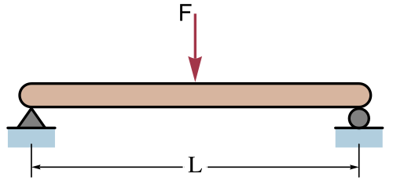
Dado que consideramos que la viga es bidimensional, para que una viga esté en equilibrio se tiene que cumplir:
Ecuaciones de Equilibrio
- Que la suma de fuerzas en el eje X sea 0 (no se mueve horizontalmente).
- Que la suma de fuerzas en el eje Y sea 0 (no se mueve verticalmente).
- Que la suma de los momentos que producen todas las fuerzas sea 0 (no gira).
4.1 Criterio de signos (Cargas)
Para realizar los cálculos en problemas de vigas, tomaremos el siguiente criterio para los signos de las cargas externas:
- Fuerzas horizontales: positivas hacia la derecha.
- Fuerzas verticales: positivas hacia arriba.
- Momentos: positivos si provocan giro antihorario.
4.2 Viga isostática
Una viga plana es isostática cuando sus reacciones pueden determinarse únicamente con las tres ecuaciones de equilibrio y la disposición de los apoyos asegura la estabilidad.
El recuento de tres incógnitas es necesario en los casos habituales, pero no basta por sí solo: las restricciones deben ser independientes y no dejar un movimiento posible. Tres reacciones concurrentes o con direcciones inadecuadas pueden formar un mecanismo.
- Si el número de reacciones es menor a 3, la viga será un mecanismo (se moverá).
- Si el número de reacciones es superior a 3, se tratará de una viga hiperestática. El grado de hiperestaticidad será mayor conforme aumente el número de reacciones redundantes. Este tipo de vigas no puede calcularse directamente, debiendo utilizar pasos adicionales para su resolución.
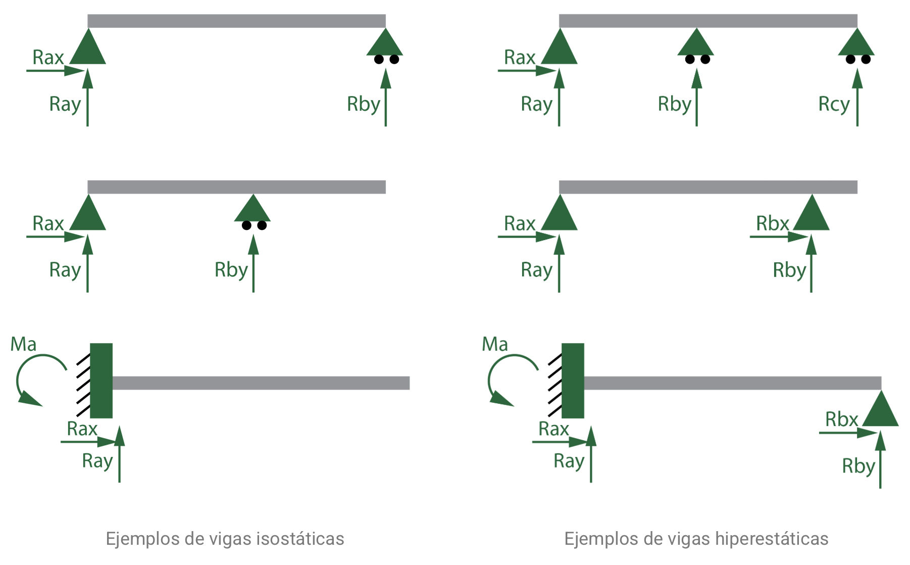
Nosotros nos centraremos en el cálculo de vigas isostáticas en este curso.
4.3 Tipos de esfuerzos en una viga
Las cargas y reacciones producen los siguientes esfuerzos en una viga (ignorando la torsión que rara vez ocurre y que no tendremos nunca en cuenta):
- Esfuerzo axil (N): genera tensiones normales, según la dirección del eje longitudinal de la viga. Es producido por la suma de todas las cargas y reacciones paralelas al eje longitudinal de la viga. El esfuerzo puede ser de tracción (tiende a estirar la viga) o de compresión (tiende a aplastarla).
- Esfuerzo cortante (V): genera tensiones tangenciales en la viga. Es producido por aquellas cargas y reacciones aplicadas en dirección perpendicular al eje longitudinal de la viga.
- Momento flector (M): normalmente es el esfuerzo más determinante y genera tensiones normales en la viga (aparecen axiles de tracción en la parte externa del giro y de compresión en la parte interna). Es producida por aquellas cargas y reacciones perpendiculares al eje longitudinal de la viga, fuerzas paralelas al eje pero descentradas y momentos de giro aplicados.
4.3.1 Criterio de signos para los esfuerzos internos
Para poder obtener las leyes de esfuerzo, es necesario definir un criterio de signos cuando estemos considerando esfuerzos en una sección “\(x\)” de la viga:
Esfuerzo Axil (N)
Se toma como criterio positivo el esfuerzo de tracción, es decir, aquellas cargas que tienen a incrementar la longitud de la barra (la compresión es negativa).
A nivel de cálculo: fuerzas horizontales a la izquierda de la sección dirigidas hacia la izquierda.
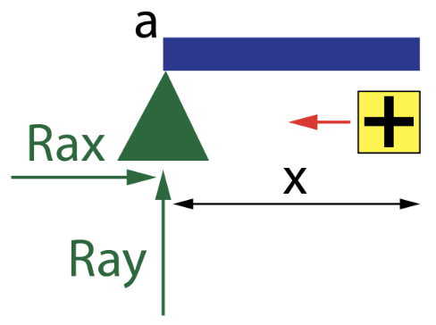
Esfuerzo Cortante (V)
Aquellas fuerzas situadas a la izquierda de la sección “\(x\)” con dirección perpendicular al eje de la viga y hacia arriba generarán un cortante positivo.
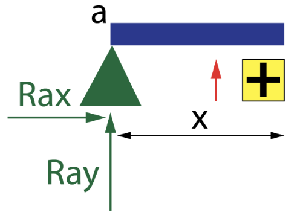
Momento Flector (M)
Se tomará como criterio de momento positivo el sentido horario producido por las cargas situadas a la izquierda de la sección “\(x\)”.
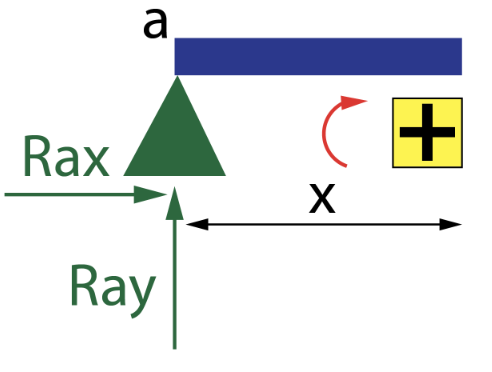
Microcomprobación 2 - Corte y convenio de signos
- Si cortas por x = 2 m, ¿incluyes una carga situada en x = 3 m?
- En la parte izquierda, una fuerza vertical hacia arriba produce V positivo o negativo con este convenio?
- Si una reacción calculada sale negativa, ¿debes cambiar la ecuación?
Comprobar y leer la retroalimentación
1. No: el corte aún no la ha atravesado. 2. V positivo. 3. No: mantén la ecuación y dibuja después la reacción en el sentido contrario al supuesto. Cambiar el convenio para evitar un signo negativo rompe la coherencia.
4.4 Diagramas de esfuerzos
Para estudiar los esfuerzos de una viga, se representan mediante tres diagramas:
- Diagrama de esfuerzo axil (N) \(\rightarrow\) muestra si la barra está en tracción o compresión.
- Diagrama de esfuerzo cortante (V) \(\rightarrow\) muestra las fuerzas internas verticales.
- Diagrama de momento flector (M) \(\rightarrow\) muestra los momentos internos que tienden a doblar la viga.
Para obtener los diagramas de esfuerzos de una viga, hay que realizar los siguientes pasos:
1. Determinar las reacciones en los apoyos
Antes de analizar los esfuerzos internos, hay que conocer cómo reacciona la viga en sus apoyos. Se aplican las ecuaciones de equilibrio:
\[\sum F_{x}=0 \quad ; \quad \sum F_{y}=0 \quad ; \quad \sum M_{z}=0\]
De ahí se obtienen las reacciones verticales, horizontales y de momento, si las hay. En los ejemplos isostáticos de esta unidad habrá tres incógnitas independientes y una disposición estable.
2. “Cortar” la viga mentalmente
Se hace un corte imaginario en un punto cualquiera de la viga, a una distancia “\(x\)” del extremo izquierdo, para analizar una de las partes.
Sobre esa parte se dibujan los esfuerzos internos que aparecen en la sección:
- \(N(x)\): fuerza horizontal interna (axil).
- \(V(x)\): fuerza vertical interna (cortante).
- \(M(x)\): momento interno (flector).
Y se vuelven a aplicar las ecuaciones de equilibrio a esa porción.
3. Expresar cada esfuerzo en función de la posición x
Al mover el punto de corte a lo largo de la viga, los valores de N, V y M cambian. Se escriben las expresiones en cada tramo, teniendo en cuenta la posición de las cargas.
Por ejemplo, si hay una carga puntual, el cortante cambia bruscamente en ese punto, mientras que el momento flector cambia de forma lineal entre cargas.
4. Dibujar los diagramas
Con los valores obtenidos, se dibujan tres diagramas (uno debajo del otro):
| Diagrama | Eje vertical representa… | Forma típica |
|---|---|---|
| N(x) | Esfuerzo axil | Constante (si no hay cargas horizontales) |
| V(x) | Esfuerzo cortante | Segmentos horizontales o con saltos |
| M(x) | Momento flector | Líneas rectas o curvas suaves (triangular o parabólica) |
Todo esto lo entenderás mejor con los ejemplos resueltos que tienes a continuación.
Microcomprobación 3 - Lectura de diagramas V/M
- En un tramo sin carga repartida, ¿qué forma tienen V y M?
- ¿Qué indica un salto vertical en V?
- ¿Dónde buscarías primero un máximo de M?
Comprobar y leer la retroalimentación
1. V es constante y M es lineal. 2. Una carga puntual o una reacción; el salto tiene su valor con signo. 3. Donde V se anula o cambia de signo, sin olvidar extremos y puntos singulares.
Ejemplo 1: resolución completa
4.5 Ejemplo 1: Viga con carga puntual
En este apartado vamos a resolver paso a paso un ejercicio completo de una viga isostática con una carga puntual.
Enunciado
Elabora los diagramas de momentos flectores y de esfuerzos cortantes correspondientes a la viga de la figura:
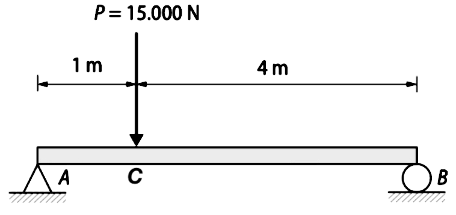
1. Calcular las reacciones
Determinamos las reacciones según los tipos de apoyos que vemos en la figura (apoyo fijo en A, apoyo móvil en B):
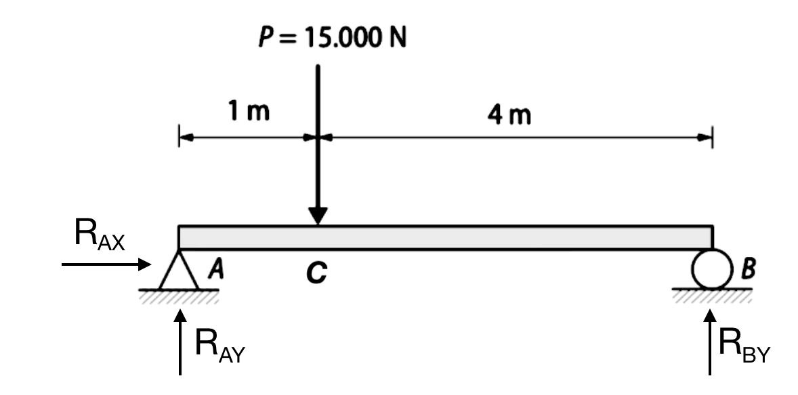
Aplicando las condiciones de equilibrio estático:
1. Equilibrio Horizontal (\(\sum F_{x}=0\)) \[R_{AX}=0\]
2. Equilibrio Vertical (\(\sum F_{y}=0\)) Considerando positivas las fuerzas hacia arriba: \[R_{AY} - P + R_{BY} = 0\]
3. Equilibrio de Momentos (\(\sum M_{A}=0\)) Tomamos momentos respecto al punto A para eliminar incógnitas (\(R_{AX}\) y \(R_{AY}\)). Criterio: antihorario positivo. \[-P \cdot 1 + R_{BY} \cdot (4+1) = 0\]
Sustituyendo los datos (\(P = 15000 \text{ N}\)):
\[ \begin{cases} R_{AX} = 0 \\ R_{AY} - 15000 + R_{BY} = 0 \\ -15000 + 5 \cdot R_{BY} = 0 \end{cases} \]
Resolviendo el sistema:
\[ \begin{aligned} R_{AX} &= 0 \text{ N} \\ R_{BY} &= \frac{15000}{5} = 3000 \text{ N} = \mathbf{3 \text{ kN}} \\ R_{AY} &= 15000 - 3000 = 12000 \text{ N} = \mathbf{12 \text{ kN}} \end{aligned} \]
2. “Cortar” la viga en tramos
El procedimiento consiste en partir la viga en tramos, separados por cambios de carga o apoyos. Recorriendo la viga de derecha a izquierda, definimos un tramo cuando aparece una nueva carga.
En este caso, la carga puntual \(P\) en el punto C divide la viga en dos tramos: Tramo A-C y Tramo C-B.
3. Expresar los esfuerzos (Cortes)
Tramo A-C (\(0 \leq x < 1\))
Analizamos el trozo de viga a una distancia \(x\) antes de llegar a la carga \(P\).
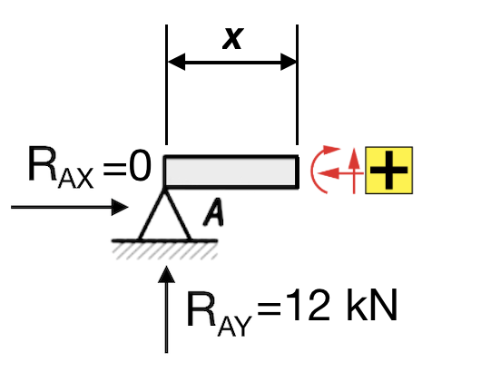
Esfuerzo Axil (\(N\)): No hay fuerzas horizontales. \[N_{A-C}(x) = R_{AX} = 0 \text{ kN}\]
Esfuerzo Cortante (\(V\)): La única fuerza vertical es la reacción en A (hacia arriba = positiva). \[V_{A-C}(x) = R_{AY} = \mathbf{12 \text{ kN}}\]
Momento Flector (\(M\)): Generado por \(R_{AY}\) a una distancia \(x\). Sentido horario (según nuestro criterio de signos a la izquierda del corte, comprime arriba) es positivo. \[M_{A-C}(x) = R_{AY} \cdot x = \mathbf{12x \text{ kN}\cdot\text{m}}\]
Tramo C-B (\(1 \leq x \leq 5\))
Pasamos la carga \(P\) y analizamos una sección genérica a distancia \(x\).
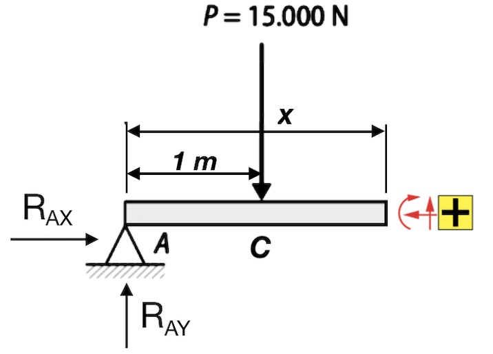
Esfuerzo Axil (\(N\)): Sigue siendo nulo. \[N_{C-B}(x) = 0 \text{ kN}\]
Esfuerzo Cortante (\(V\)): A la reacción \(R_{AY}\) se le resta la carga \(P\) (hacia abajo). \[V_{C-B}(x) = R_{AY} - 15 = 12 - 15 = \mathbf{-3 \text{ kN}}\]
Momento Flector (\(M\)): Sumamos el momento de la reacción y restamos el de la carga \(P\) (que genera giro antihorario respecto al corte, negativo). La distancia de la carga \(P\) al corte es \((x-1)\). \[M_{C-B}(x) = R_{AY} \cdot x - 15 \cdot (x-1)\] \[M_{C-B}(x) = 12x - 15x + 15 = \mathbf{15 - 3x \text{ kN}\cdot\text{m}}\]
4. Dibujar los diagramas
Representamos las funciones obtenidas.
- Axiles: \(N(x) = 0\).
- Cortantes: Valor constante de \(12\) hasta \(x=1\), donde baja a \(-3\).
- Flectores: Crecimiento lineal \(12x\) hasta el máximo en \(x=1\) (\(12 \text{ kN}\cdot\text{m}\)), luego decrece linealmente hasta 0 en el apoyo B.
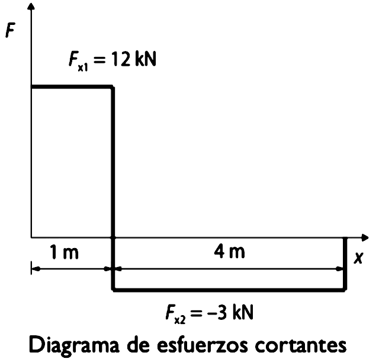
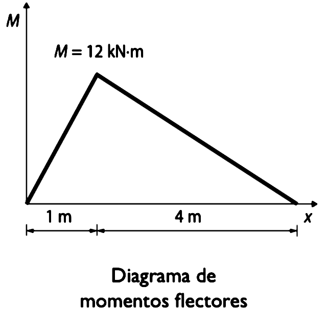
Ejercicios propuestos
1. Elabora los diagramas de momentos flectores y de esfuerzos cortantes correspondientes a la viga de la figura:
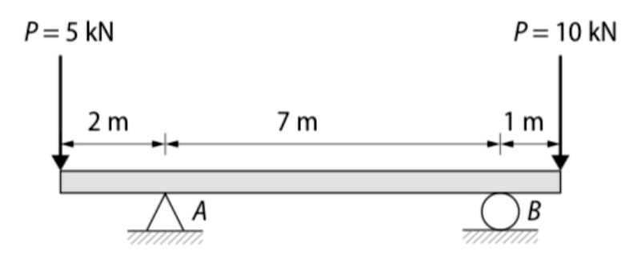
Solución (partiendo del extremo izquierdo de la viga):
- Momentos flectores:
- \(0 \leq x \leq 2 \text{ m} \rightarrow M_{x1} = -5x \text{ (kN}\cdot\text{m)}\)
- \(2 \leq x \leq 9 \text{ m} \rightarrow M_{x2} = -10 \text{ (kN}\cdot\text{m)}\)
- \(9 \leq x \leq 10 \text{ m} \rightarrow M_{x3} = 10x - 100 \text{ (kN}\cdot\text{m)}\)
- Esfuerzos cortantes:
- \(0 \leq x \leq 2 \text{ m} \rightarrow V_{x1} = -5 \text{ kN}\)
- \(2 \leq x \leq 9 \text{ m} \rightarrow V_{x2} = 0 \text{ kN}\)
- \(9 \leq x \leq 10 \text{ m} \rightarrow V_{x3} = 10 \text{ kN}\)
2 (PAU). Se requiere analizar la viga presentada en la figura adjunta:
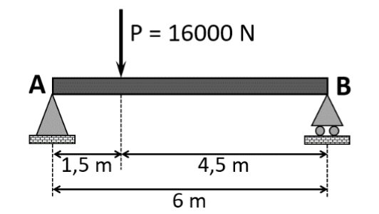
Considerando los datos proporcionados, calcular:
- Las reacciones en ambos apoyos en condiciones de equilibrio estático. (Sol: \(R_{Ax} = 0 \text{ N}\); \(R_{Ay} = 12 \text{ kN}\); \(R_{By} = 4 \text{ kN}\))
- Las ecuaciones de fuerzas cortantes y momentos flectores en cada tramo de la viga en función de la coordenada “x”. (Sol: Para \(0 \leq x \leq 1,5\text{m} \rightarrow V(x) = 12 \text{ kN}, M(x) = 12x \text{ kN}\cdot\text{m}\); Para \(1,5 \leq x \leq 6\text{m} \rightarrow V(x) = -4 \text{ kN}, M(x) = -4x + 24 \text{ kN}\cdot\text{m}\))
- Representar los diagramas de esfuerzos cortantes y momentos flectores en la viga.
3 (PAU). En la siguiente figura se representan las cargas que debe soportar una viga y los apoyos que tiene en la estructura de la que forma parte.
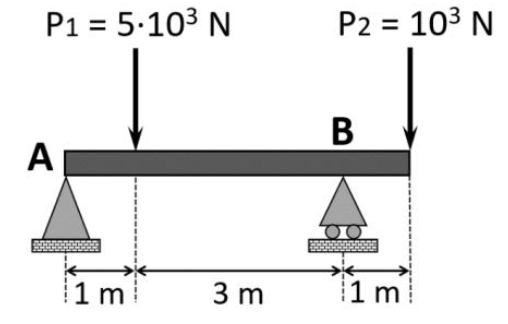
Considerando los datos proporcionados, analizar la estructura calculando:
- Las reacciones en ambos apoyos en condiciones de equilibrio estático. (Sol: \(R_{Ax} = 0 \text{ kN}\); \(R_{Ay} = 3,5 \text{ kN}\); \(R_{By} = 2,5 \text{ kN}\))
- Representar los diagramas de esfuerzos cortantes y momentos flectores en la viga. (Sol: \(0 \leq x \leq 1 \rightarrow V=3,5, M=3,5x\); \(1 \leq x \leq 4 \rightarrow V=-1,5, M=-1,5x+5\); \(4 \leq x \leq 5 \rightarrow V=1, M=x-5\))
- Obtener el momento flector máximo. (Sol: \(M_{max}(1 \text{ m}) = 3,5 \text{ kN}\cdot\text{m}\))
4 (PAU). Se requiere analizar una viga de 5 m con su extremo derecho (punto B) empotrado en una pared. Sobre el extremo izquierdo (punto A) actúa una fuerza peso de 3 kN, y a 2 m del empotramiento se localiza otra fuerza peso de 2 kN. Se pide:
- Calcular el valor de las reacciones que se producen en el empotramiento (punto B) en condiciones de equilibrio estático. (Sol: \(R_{Bx} = 0 \text{ kN}\); \(R_{By} = 5 \text{ kN}\); \(M_{B} = - 19 \text{ kN}\cdot\text{m}\))
- Representar los diagramas de esfuerzos cortantes y momentos flectores en la viga en función de x. (Sol: \(0 \leq x \leq 3 \rightarrow V=-3, M=-3x\); \(3 \leq x \leq 5 \rightarrow V=-5, M=-5x+6\))
5 (PAU). Para evitar inundaciones con las crecidas, se ha canalizado el río Guadalquivir a su paso por Sevilla en varios tramos, y la expansión de la ciudad hace necesario construir un nuevo puente sobre el canal de 46 m de ancho. Se estudia la opción de construir el puente con vigas de hormigón armado tipo Doble T como las de la figura, que pueden alcanzar hasta los 53 m de largo.
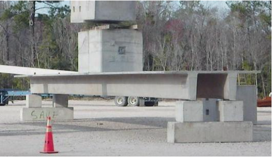
Tras el estudio del terreno, se decide usar una viga de 50 m de largo apoyada en un extremo en un soporte fijo y el otro en un apoyo móvil o de rodillo. El puente debe soportar el paso de vehículos pesados, por lo que se diseñará para una masa máxima de vehículos de 65 toneladas. La masa de la viga es 110,5 toneladas. Colabora en el diseño del puente resolviendo las siguientes cuestiones.
- Dibujar el diagrama de sólido libre del puente cuando el vehículo pesado haya recorrido 25 m del puente desde el extremo fijo, y calcular el valor de las reacciones en ambos apoyos en condiciones de equilibrio estático. (Sol: \(R_{Ax} = 0\); \(R_{Ay} = 861 \text{ kN}\); \(R_{By} = 861 \text{ kN}\))
- Representar los diagramas de esfuerzos cortantes y momentos flectores en la viga, y determinar el momento flector máximo que debe soportar la viga cuando el camión esté en esa posición. (Sol: \(0 \leq x \leq 25 \rightarrow V=861, M=861x\); \(25 \leq x \leq 50 \rightarrow V=-861, M=-861x + 43050\); \(M_{max} = 21525 \text{ kN}\cdot\text{m}\))
(NOTA: este ejercicio está planteado para considerar el peso de la viga como una carga puntual aplicada en su centro de masas, no como una distribución continua de carga).
6 (PAU). El estudio de arquitectura Andalusí está desarrollando el proyecto de un bloque de viviendas en primera línea de playa en Almería. Una de las viviendas del ático dispone de una terraza voladiza de 4 m de longitud que sobresale desde la fachada principal. La terraza se modela como una viga con un extremo empotrado en la fachada y el otro extremo en voladizo.
Teniendo en cuenta el tamaño total de la terraza, se estima que durante una fiesta puede albergar un grupo de personas con un peso total de 8,5 kN. El peso de la losa de hormigón de la terraza es de 16,8 kN.
- Dibujar el diagrama de cuerpo libre de la terraza y calcular las reacciones considerando la fuerza peso del grupo de personas como una carga puntual aplicada en el centro. (Sol: \(R_{Ax} = 0 \text{ kN}\); \(R_{Ay} = 25,3 \text{ kN}\); \(M_{A} = 50,6 \text{ kN}\cdot\text{m}\))
- Representar los diagramas de esfuerzos cortantes y momentos flectores resultantes. (Sol: \(0 \leq x \leq 2 \rightarrow V=25,3, M=25,3x - 50,6\); \(2 \leq x \leq 4 \rightarrow V=0, M=0\))
- Determinar el valor del momento flector máximo que soportará la terraza y en qué posición se encuentra. (Sol: \(M_{max} = 50,6 \text{ kN}\cdot\text{m}\) en \(x = 0\))
Carga uniformemente repartida
4.6 Ejemplo resuelto: viga con carga distribuida
Una carga repartida se sustituye por su resultante antes de calcular las reacciones.
En este apartado analizaremos una viga con una carga distribuida rectangular.
Enunciado
Elabora los diagramas de momentos flectores y de esfuerzos cortantes correspondientes a la viga de la figura:
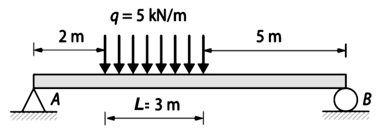
1. Calcular las reacciones
Determinamos las reacciones según los tipos de apoyos que vemos en la figura:
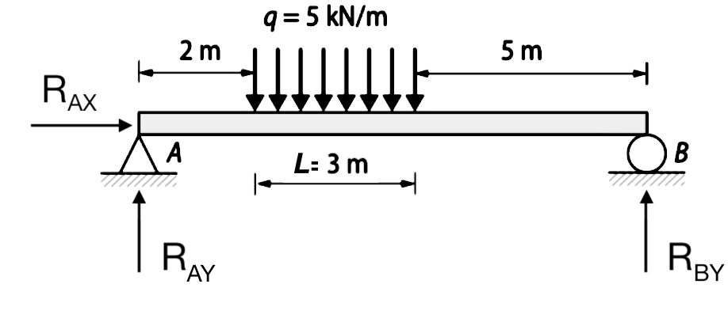
Aplicando las condiciones de equilibrio estático:
1. Equilibrio Horizontal (\(\sum F_{x}=0\)) \[R_{AX}=0\]
2. Equilibrio Vertical (\(\sum F_{y}=0\)) Considerando positivas las fuerzas hacia arriba. La carga distribuida (\(q\)) se multiplica por la longitud (\(L\)) para obtener la fuerza total: \[R_{AY} - q \cdot L + R_{BY} = 0\]
3. Equilibrio de Momentos (\(\sum M_{A}=0\)) Tomamos momentos respecto al punto A. La carga distribuida equivale a una fuerza \(q \cdot L\) aplicada en su centro. En este caso, la carga de \(3\text{m}\) está centrada a \(2 + 1,5 = 3,5\text{m}\) de A. \[-q \cdot L \cdot (2 + \frac{L}{2}) + R_{BY} \cdot (2 + L + 5) = 0\]
Sustituyendo los datos (\(q=5 \text{ kN/m}\), \(L=3 \text{ m}\)):
\[ \begin{cases} R_{AX} = 0 \\ R_{AY} - 5 \cdot 3 + R_{BY} = 0 \\ -5 \cdot 3 \cdot (2 + 1,5) + R_{BY} \cdot (2 + 3 + 5) = 0 \end{cases} \]
Simplificando: \[ \begin{cases} R_{AX} = 0 \\ R_{AY} - 15 + R_{BY} = 0 \\ -52,5 + 10 \cdot R_{BY} = 0 \end{cases} \]
Resolviendo el sistema:
\[ \begin{aligned} R_{AX} &= 0 \text{ N} \\ R_{BY} &= \frac{52,5}{10} = \mathbf{5,25 \text{ kN}} \\ R_{AY} &= 15 - 5,25 = \mathbf{9,75 \text{ kN}} \end{aligned} \]
2. “Cortar” la viga en tramos
Dividimos la viga en tramos separados por cambios de carga o apoyos: * Tramo A-C (\(0 \le x < 2\)): Entre el apoyo A y el inicio de la carga. * Tramo C-D (\(2 \le x \le 5\)): Zona de la carga distribuida. * Tramo D-B (\(5 < x \le 10\)): Entre el final de la carga y el apoyo B.
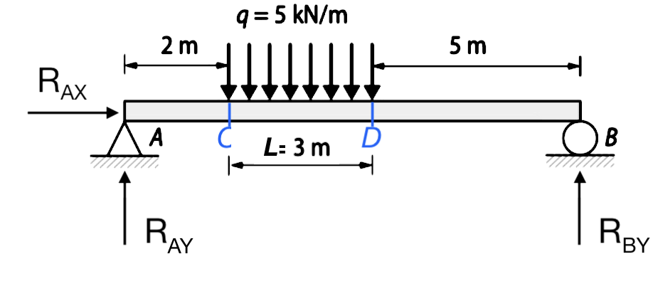
3. Expresar los esfuerzos (Cortes)
Tramo A-C (\(0 \le x < 2\))
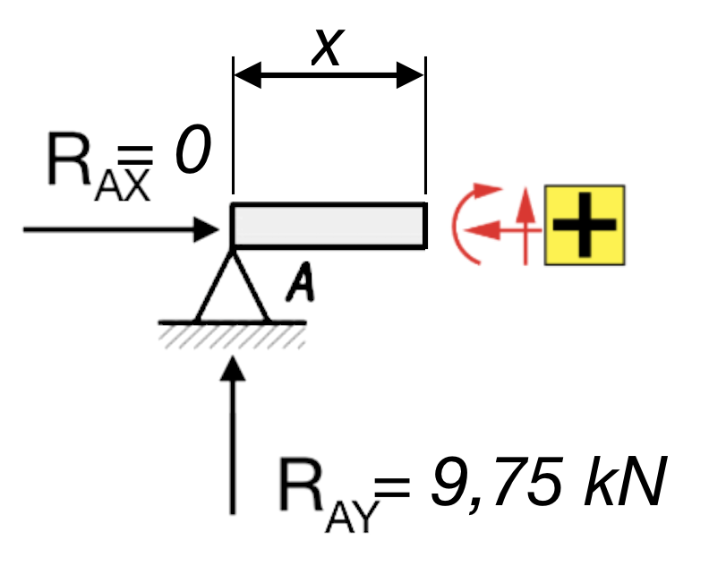
- Axil: \(N_{A-C}(x) = 0 \text{ kN}\)
- Cortante: \(V_{A-C}(x) = R_{AY} = \mathbf{9,75 \text{ kN}}\)
- Momento: \(M_{A-C}(x) = R_{AY} \cdot x = \mathbf{9,75x \text{ kN}\cdot\text{m}}\)
Tramo C-D (\(2 \le x \le 5\))
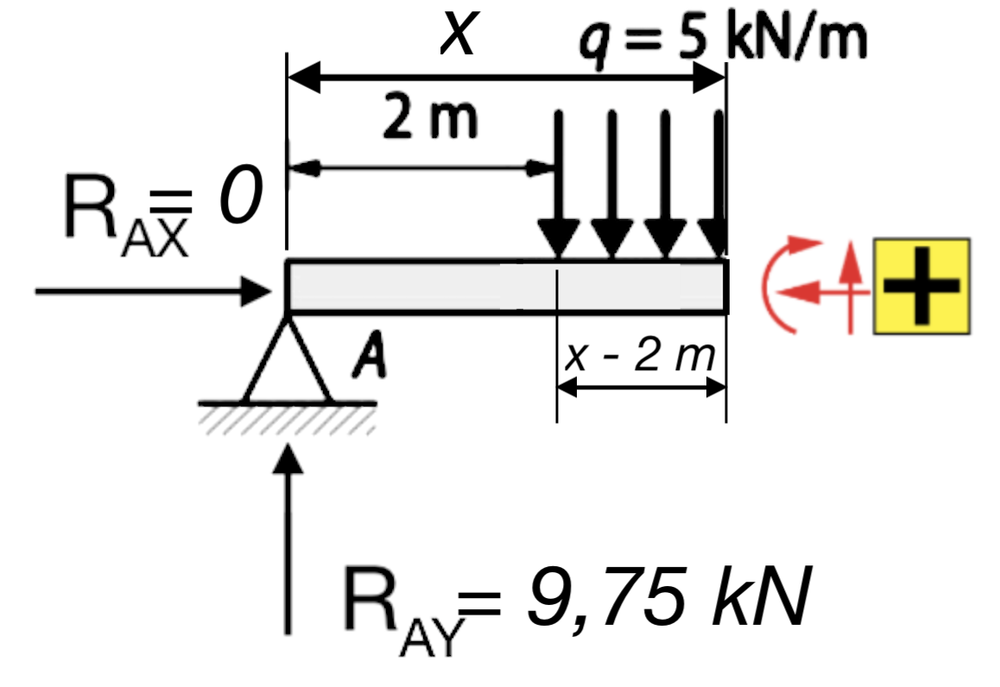
- Axil: \(N_{C-D}(x) = 0 \text{ kN}\)
- Cortante: Restamos la parte de carga distribuida que entra en el corte (\(q \cdot (x-2)\)). \[V_{C-D}(x) = R_{AY} - 5(x-2) = 9,75 - 5x + 10 = \mathbf{19,75 - 5x \text{ kN}}\]
- Momento: La carga distribuida parcial tiene su centro a \((x-2)/2\) del corte. \[M_{C-D}(x) = R_{AY} \cdot x - [5(x-2)] \cdot \frac{x-2}{2}\] \[M_{C-D}(x) = 9,75x - 2,5(x-2)^2\] \[M_{C-D}(x) = \mathbf{-2,5x^2 + 19,75x - 10 \text{ kN}\cdot\text{m}}\]
Tramo D-B (\(5 < x \le 10\))
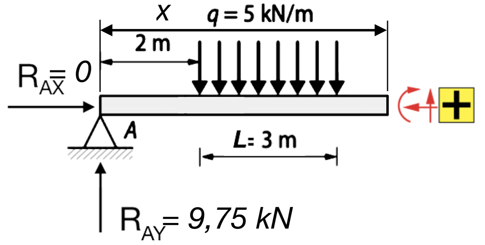
- Axil: \(N_{D-B}(x) = 0 \text{ kN}\)
- Cortante: Ahora restamos la carga distribuida completa (\(5 \cdot 3 = 15\)). \[V_{D-B}(x) = R_{AY} - 15 = 9,75 - 15 = \mathbf{-5,25 \text{ kN}}\]
- Momento: La carga completa de 15 kN está centrada en \(x=3,5\) (mitad de la distribución). \[M_{D-B}(x) = R_{AY} \cdot x - 15 \cdot (x-3,5)\] \[M_{D-B}(x) = 9,75x - 15x + 52,5 = \mathbf{52,5 - 5,25x \text{ kN}\cdot\text{m}}\]
4. Dibujar los diagramas
Resumen de ecuaciones y cálculo del máximo:
\[ \textbf{Esfuerzo Cortante } V(x) = \begin{cases} 9,75 & 0 \le x < 2 \\ 19,75 - 5x & 2 \le x \le 5 \\ -5,25 & 5 < x \le 10 \end{cases} \quad [\text{kN}] \]
\[ \textbf{Momento Flector } M(x) = \begin{cases} 9,75x & 0 \le x < 2 \\ -2,5x^2 + 19,75x - 10 & 2 \le x \le 5 \\ -5,25x + 52,5 & 5 < x \le 10 \end{cases} \quad [\text{kN}\cdot\text{m}] \]
Punto de momento máximo: Se produce donde el cortante es nulo (\(V=0\)) dentro del tramo con carga distribuida: \[19,75 - 5x = 0 \Rightarrow x = 3,95 \text{ m}\] \[M_{\text{máx}} = -2,5(3,95)^2 + 19,75(3,95) - 10 = \mathbf{29,006 \text{ kN}\cdot\text{m}}\]
Representación gráfica:
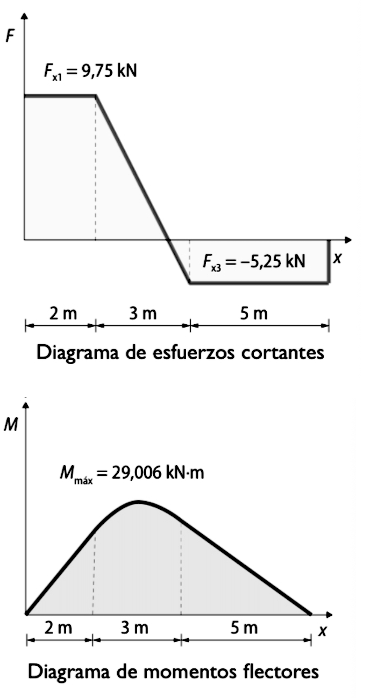
Ejercicio propuesto
1. La viga de la figura es de madera laminada de perfil rectangular de \(25 \times 50 \text{ cm}\) y soporta una carga uniformemente distribuida de \(40 \text{ kN/m}\).
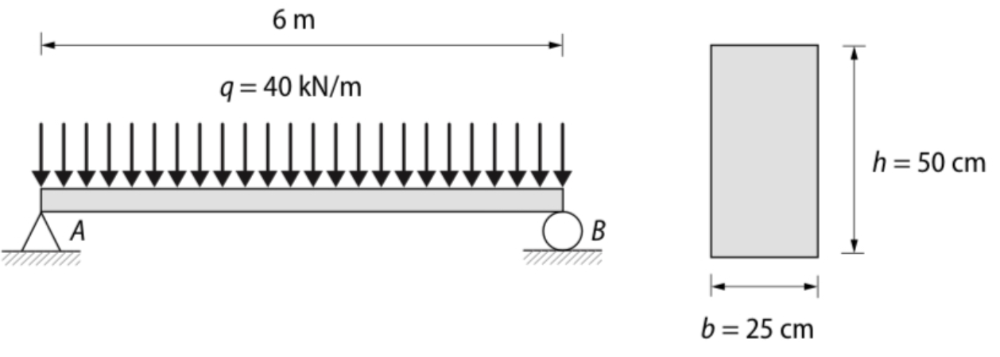
- Elabora los diagramas de momentos flectores y de esfuerzos cortantes correspondientes a la viga.
- Halla las tensiones máximas de tracción y compresión producidas en la viga como consecuencia de la flexión.
Solución:
- (Partiendo del punto A):
- \(0 \le x \le 6 \text{ m} \rightarrow M(x) = 120x - 20x^2 \text{ kN}\cdot\text{m}\)
- Momento máximo en \(x = 3 \text{ m}: M_{max} = 180 \text{ kN}\cdot\text{m}\)
- \(0 \le x \le 6 \text{ m} \rightarrow V(x) = 120 - 40x \text{ kN}\)
- \(\sigma_t = 17.280 \text{ kN/m}^2\); \(\sigma_c = -17.280 \text{ kN/m}^2\)
Voladizo con carga repartida
4.7 Ejemplo resuelto: voladizo con carga uniformemente repartida
Una carga repartida se sustituye por su resultante antes de calcular las reacciones.
En este ejemplo analizaremos una viga en voladizo (cantilever) empotrada en un extremo y libre en el otro, sometida a una carga distribuida.
Enunciado
Elabora los diagramas de momentos flectores y de esfuerzos cortantes correspondientes a la viga en voladizo de la figura, con carga uniformemente distribuida:
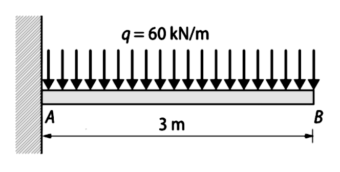
1. Calcular las reacciones
En este caso hay un solo apoyo (empotramiento en A) donde se concentran las tres reacciones (\(R_{AX}, R_{AY}, M_A\)):
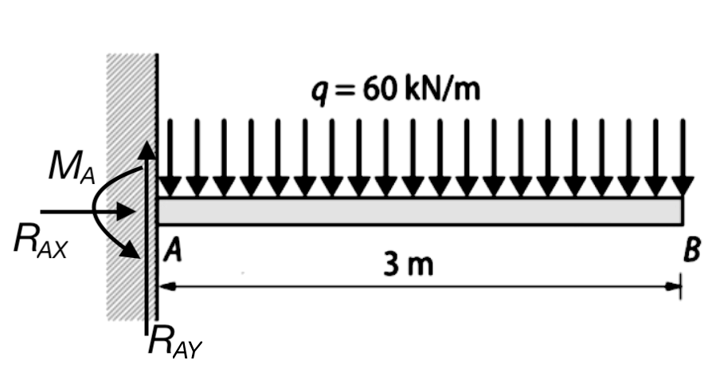
Fíjate que el momento de reacción, \(M_A\), tiene sentido antihorario porque debe oponerse al momento creado por la carga, que tiende a girar la viga en sentido horario.
Las ecuaciones de equilibrio son:
1. Equilibrio Horizontal (\(\sum F_{x}=0\)) \[R_{AX}=0\]
2. Equilibrio Vertical (\(\sum F_{y}=0\)) La carga total es \(Q = q \cdot L\). \[R_{AY} - q \cdot L = 0 \Rightarrow \mathbf{R_{AY} = q \cdot L}\]
3. Equilibrio de Momentos (\(\sum M_{A}=0\)) Tomamos momentos en el apoyo A. La carga distribuida equivale a una fuerza \(q \cdot L\) en el centro (\(L/2\)). \[-q \cdot L \cdot \frac{L}{2} + M_{A} = 0 \Rightarrow \mathbf{M_{A} = q \cdot \frac{L^2}{2}}\]
Sustituyendo los datos (\(q=60 \text{ kN/m}\), \(L=3 \text{ m}\)):
\[ \begin{aligned} R_{AX} &= 0 \text{ N} \\ R_{AY} &= 60 \cdot 3 = \mathbf{180 \text{ kN}} \\ M_{A} &= 60 \cdot \frac{3^2}{2} = \mathbf{270 \text{ kN}\cdot\text{m}} \end{aligned} \]
2. “Cortar” la viga
Como solo tenemos una carga continua sobre toda la longitud, no es necesario dividir la viga en tramos. Una única ecuación de \(0\) a \(L\) servirá para toda la viga.
3. Expresar los esfuerzos (\(0 \le x \le 3\))
Analizamos una sección a distancia \(x\) del empotramiento:
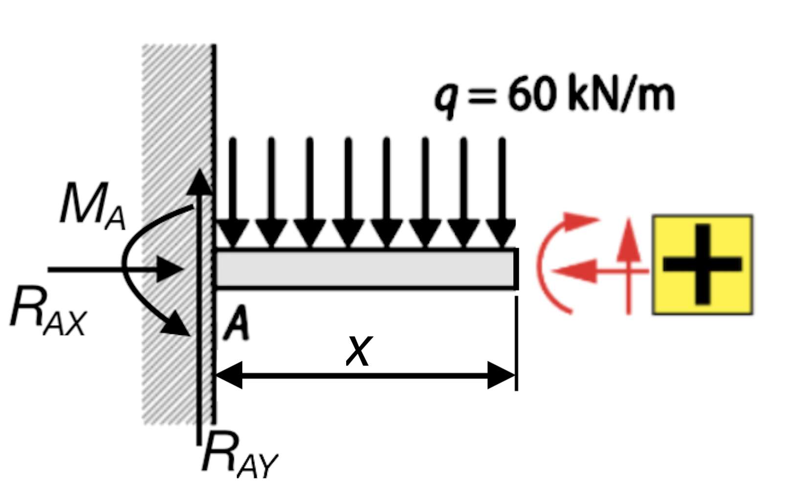
Esfuerzo Axil (\(N\)): No hay fuerzas horizontales. \[N(x) = 0 \text{ kN}\]
Esfuerzo Cortante (\(V\)): Suma de fuerzas verticales a la izquierda (Reacción \(R_{AY}\) positiva, carga distribuida \(q \cdot x\) negativa). \[V(x) = R_{AY} - q \cdot x\] \[V(x) = 180 - 60x \text{ kN}\]
Momento Flector (\(M\)): Suma de momentos a la izquierda (Reacción \(R_{AY}\) positiva, Carga distribuida negativa, Momento de empotramiento \(M_A\) negativo).
- Brazo de \(R_{AY}\): \(x\)
- Brazo de la carga distribuida (\(q \cdot x\)): \(x/2\)
\[M(x) = R_{AY} \cdot x - (q \cdot x) \cdot \frac{x}{2} - M_{A}\] \[M(x) = 180x - 60 \cdot \frac{x^2}{2} - 270\] \[M(x) = -30x^2 + 180x - 270 \text{ kN}\cdot\text{m}\]
4. Dibujar los diagramas
Resumen de las leyes de esfuerzos (\(0 \le x \le 3\) m):
\[\begin{align*} \textbf{Cortante:}\quad &V(x) = 180 - 60x \quad [\text{kN}] \\ \textbf{Flector:}\quad &M(x) = -30x^2 + 180x - 270 = -30(x-3)^2 \quad [\text{kN}\cdot\text{m}] \end{align*}\]
Valores extremos: * En el empotramiento (\(x=0\)): * \(V(0) = 180 \text{ kN}\) * \(M(0) = -270 \text{ kN}\cdot\text{m}\) (Máximo momento negativo) * En el extremo libre (\(x=3\)): * \(V(3) = 180 - 180 = 0 \text{ kN}\) * \(M(3) = -30(0) = 0 \text{ kN}\cdot\text{m}\)
El diagrama de cortantes es lineal y el de momentos parabólico:
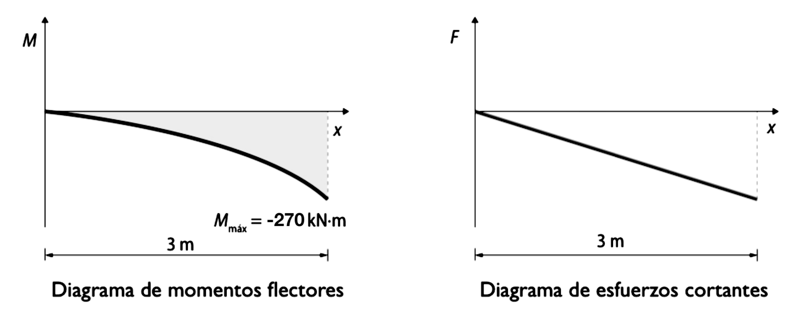
Ejercicio propuesto
1. Elabora los diagramas de momentos flectores y de esfuerzos cortantes correspondientes a la viga en voladizo de la figura:
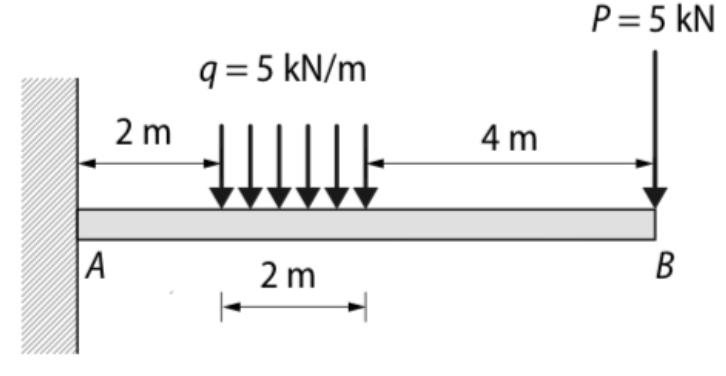
Solución (partiendo del punto B, de derecha a izquierda, o reajustando coordenadas):
- Momentos flectores:
- \(0 \le x \le 4 \text{ m} \rightarrow M(x) = -5x \text{ kN}\cdot\text{m}\)
- \(4 \le x \le 6 \text{ m} \rightarrow M(x) = -2,5x^2 + 15x - 40 \text{ kN}\cdot\text{m}\)
- \(6 \le x \le 8 \text{ m} \rightarrow M(x) = 50 - 15x \text{ kN}\cdot\text{m}\)
- Esfuerzos cortantes:
- \(0 \le x \le 4 \text{ m} \rightarrow V(x) = -5 \text{ kN}\)
- \(4 \le x \le 6 \text{ m} \rightarrow V(x) = -5x + 15 \text{ kN}\)
- \(6 \le x \le 8 \text{ m} \rightarrow V(x) = -15 \text{ kN}\)
4.8 Otros ejemplos de cálculo de esfuerzos
Para reforzar lo aprendido, aquí tienes un recurso audiovisual donde se explican paso a paso algunos ejercicios adicionales de cálculo de reacciones y diagramas de esfuerzos (cortantes y flectores) en vigas isostáticas.